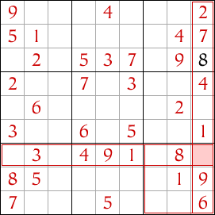

Sudoku facile pour les débutants avec techniques et conseils
La technique la plus courante pour résoudre un Sudoku facile est la technique du Singleton Nu. Si vous êtes nouveau dans le sudoku, jetez un coup d'œil à cette technique ci-dessous. Vous devrez la maîtriser avant de passer à des puzzles plus difficiles.
Singleton Nu (Une technique pour débutants)
Parfois, il y a une case dans le sudoku où un seul chiffre est possible. Considérez la case mise en surbrillance dans cette grille de sudoku ci-dessous ; quels chiffres pourrait-elle contenir ? Selon les règles du sudoku, aucune ligne, colonne ou bloc ne peut contenir le même chiffre deux fois.

Le bloc contenant la case mise en surbrillance contient déjà les chiffres 2, 4, 7 et 9, donc aucun de ces chiffres n'est autorisé dans la case. De même, la colonne contenant la case contient les chiffres 1, 2, 4, 6, 7 et 9, donc ces chiffres ne sont pas autorisés non plus, et la ligne contenant la case a les chiffres 2, 3, 5, 7 et 9, donc ces chiffres sont également interdits dans la case.
Avec tous ces chiffres interdits, il n'y a qu'un seul chiffre autorisé dans la case, et c'est le chiffre 8. Nous pouvons donc placer un 8 dans la case. C'est le singleton nu.
Maintenant, regardez plus bas dans la même colonne la case mise en surbrillance dans l'image suivante. Quels chiffres pourrait-elle contenir ? Regardez le bloc, la ligne et la colonne contenant cette case et vous remarquerez que les chiffres 1, 2, 3, 4, 6, 7, 8, et 9 sont tous interdits. Donc, le seul chiffre autorisé dans cette case est 5.
Après avoir placé le 5, il ne reste qu'une seule case dans cette colonne, donc c'est facile - elle doit être un 3 car c'est le seul chiffre qui n'a pas encore été utilisé dans la colonne.

En regardant autour des cases dans ce sudoku, vous trouverez plus de singletons nus dans les cases mises en surbrillance, et après avoir complété ces cases, d'autres singletons nus deviendront disponibles.
C'est un sudoku assez facile et peut être complété en utilisant uniquement la technique du singleton nu, bien que parfois les singletons nus puissent être difficiles à trouver.